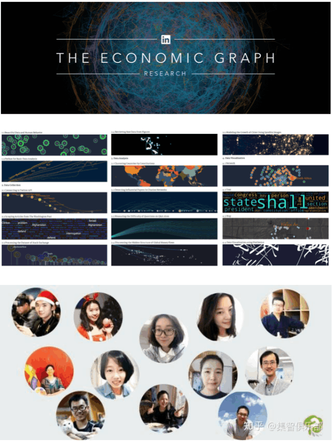

Small Teams Disrupt
Large teams develop and small teams disrupt science and technology.

Soft Skills Matter
Skill discrepancies between research, education, and jobs reveal the critical need to supply soft skills for the data economy.

Research, Teaching, and Service
Research and teaching plans on computational social science and service across academia and industry.